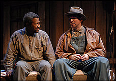
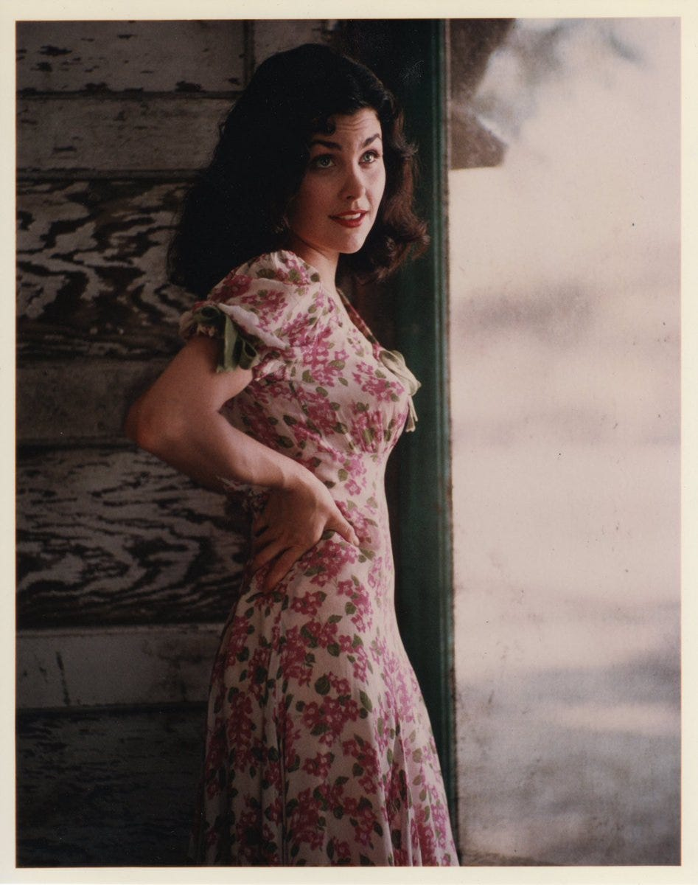

Summary:
The next evening, Saturday, Crooks sits on his bunk in the harness room. The Black stable-hand has a crooked back—the source of his nickname—and is described as a “proud, aloof man” who spends much of his time reading. Lennie, who has been in the barn tending to his puppy, appears in the doorway, looking for company. Crooks tells him to go away, saying that if he, as a Black man, is not allowed in the white quarters, then white men are not allowed in his. Lennie does not understand. He innocently reports that everyone else has gone into town and that he saw Crooks’s light on and thought he could come in and keep him company. Finally, despite himself, Crooks yields to Lennie’s “disarming smile” and invites him in.
Soon enough, Lennie forgets his promise to keep the farm a secret and begins to babble cheerfully about the place that he and George will buy someday. Crooks does not believe him, assuming that the fantasy is part of Lennie’s intellectual disability. He tells Lennie about his own life, recounting his early days on a chicken farm when white children visited and played with him. Still, he says, he felt keenly alone even then. His family was the only Black family for miles, and his father constantly warned him against keeping company with their white neighbors. The importance of this instruction escaped Crooks as a child, but he says that he has come to understand it perfectly. Now, as the only Black man on the ranch, he resents the unfair social norms that require him to sleep alone in the stable.

Feeling weak and vulnerable himself, Crooks cruelly suggests that George might never return from town. He enjoys torturing Lennie, until Lennie becomes angry and threatens Crooks, demanding to know “Who hurt George?” Crooks hastily backs down, promising that George will come back, and begins to talk about his childhood again, which returns Lennie to his dreams of owning the farm. Crooks bitterly says that every ranch-hand has the same dream. He adds that he has seen countless men go on about the same piece of land, but nothing ever comes of it. A little piece of land, Crooks claims, is as hard to find as heaven.
Candy eventually joins them, entering Crooks’s room for the first time in all of the years they have worked together. Both men are uncomfortable at first but Candy is respectful and Crooks pleased to have more company. Candy talks to Lennie about raising rabbits on the farm. He has been busy calculating numbers and thinks he knows how the farm can make some money with rabbits. Crooks continues to belittle their dream until Candy insists that they already have the land picked out and nearly all the money they’ll need to buy it. This news piques the Black man’s interest. Shyly, Crooks suggests that maybe they could take him along with them. But Curley’s wife appears and interrupts the men’s daydreaming.

Curley’s wife asks about her husband, then says she knows that the men went to a brothel, cruelly observing that “they left all the weak ones here.” Crooks and Candy tell her to go away, but instead she starts talking about her loneliness and her unhappy marriage. Candy insists that she leave and says proudly that even if she got them fired, they could go off and buy their own place to live. Curley’s wife laughs at him, then bitterly complains about her life with Curley. She sums up her situation, admitting that she feels pathetic to want company so desperately that she is willing to talk to the likes of Crooks, Candy, and Lennie. She asks what happened to her husband’s hand, and does not believe the men when they insist that he got it caught in a machine. She teases Lennie about the bruises on his face, deducing that he got injured in the scuffle with Curley.
Fed up, Crooks insists that she leave before he tells the boss about her wicked ways, and she responds by asking if he knows what she can do to him if he says anything. The implication is clear that she could easily have him lynched, and he cowers. Candy says that he hears the men coming back, which finally makes her leave, but not before she tells Lennie that she is glad he beat her husband. George appears, and criticizes Candy for talking about their farm in front of other people. As the white men leave Crooks, he changes his mind about going to the farm with them, calling out, “I wouldn’ want to go no place like that.”
(Visit Sparknotes)